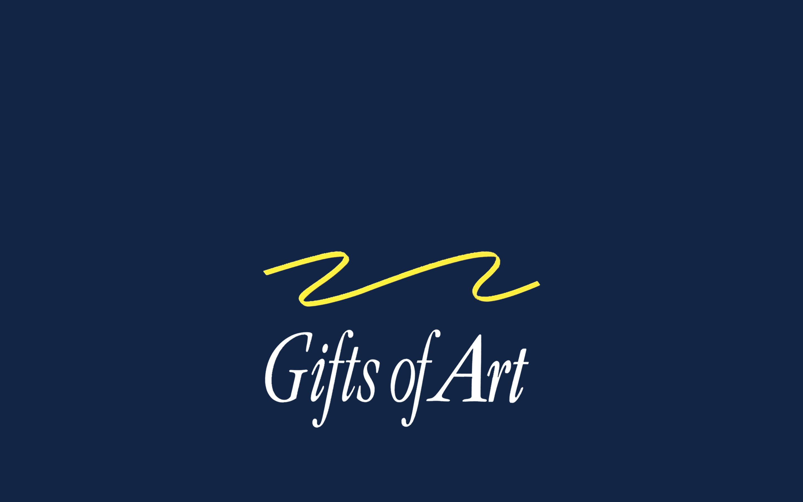
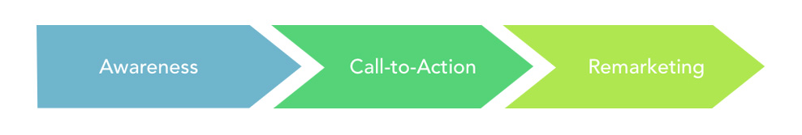

User Research and Design Consulting for an Art Exhibition Organization
User Research
Contextual Inquiry
UX Consultant
Graphic Designer
Jaklyn Nunga, Yujin Gu
Nora Dolliver, Corina Kesler
Gifts of Art (GoA) is a non-profit organization dedicated to bringing the visual and performing arts to the University of Michigan Hospital System. The program they asked for our help with was for their rotating exhibits, which are displayed in nine galleries with approximately 10,000 visitors each year. It is this process that GoA solicited our help on, with their initial explanation of the problem focusing on two major areas:
Brochures of GoA
2D Art Works
3D Art Works
In order to gain insights into GoA’s problems regarding artist solicitation, online submission process, and data management, our team conducted a user-centered approach called contextual inquiry:
We met with our client for clear problem statement and collected sufficient artifacts.
We conducted 5 background research reports through over 50 literature reviews and 2 user interviews.
We conducted another 3 user interviews with different types of artists and collected qualitative data.
We worked for more than 10 hours on interpreting data and building affinity walls based on over 200 notes we created. This process is especially helpful in finding the key problems GoA is facing and recommending solutions.
We found 5 key findings from the interviews and affinity wall:
We constructed 3 key recommendations for our client:
Because of the low number of mail-in applications, we agree eliminating mail-in submissions is reasonable. In lieu of mailing applications, we recommend sending informational brochures with call-to-action messaging for artists. We also recommend reallocating brochure distribution to preferred art communities, such as 3D artists, via prestigious art programs, schools, and galleries.

The inefficiencies and redundancies outlined in the system management findings can be resolved by working with a content management system, particularly a submission management system.